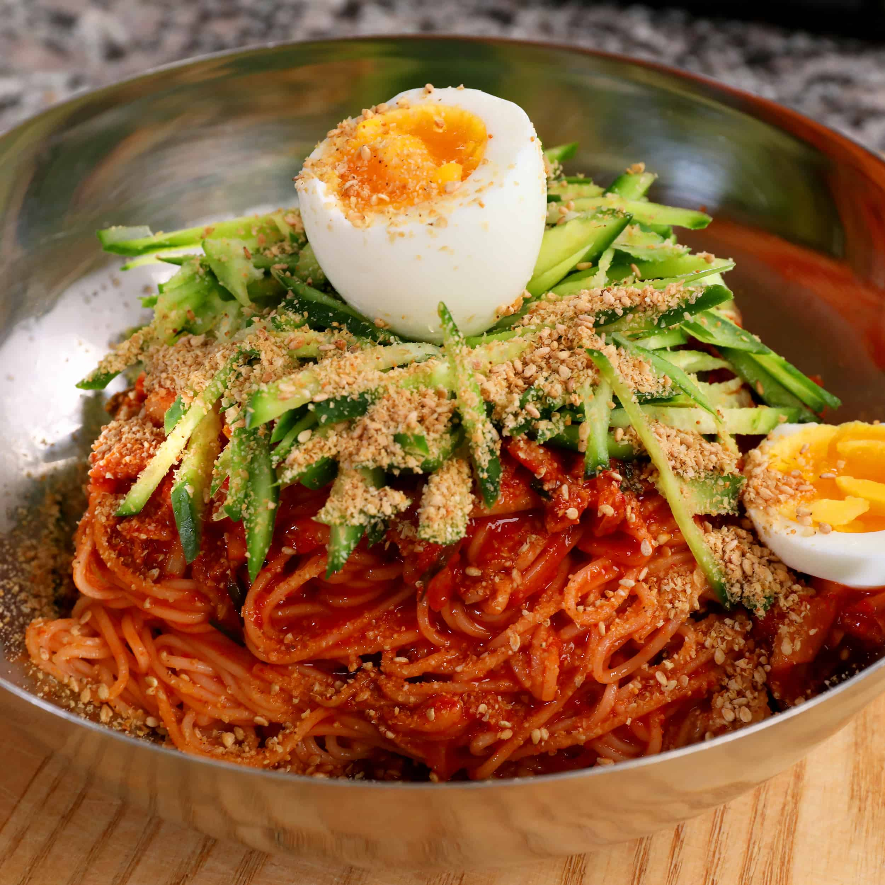

Michael's Bibim Guksu Recipe

Description
Bibim guksu is a cold noodle dish with fresh vegetables served in a spicy, sweet and tangy gochujang sauce. Easy, refreshing and delicious!
Ingredients
- Noodles
- Gochujang
- Green Apple
- Garlic Cloves
- Soy Sauce
- Eggs
- Sesame Oil
- Kimchi
- Raw onion
- Furikake for taste
Steps
- Boil eggs for 8-9 minutes, set them aside
- Mince 3 cloves of garlic
- Slice 1/2 green apple into matchsticks
- Slice 1/2 onion into strips
- Take the gochujang, soy sauce, sesame oil, garlic and mix well
- Cook the noodles following the instructions on the packaging
- Mix noodles in sauce
- Add desired amount of apple and onion
- Slice and add hard boiled egg
- Add desired amount of furikake